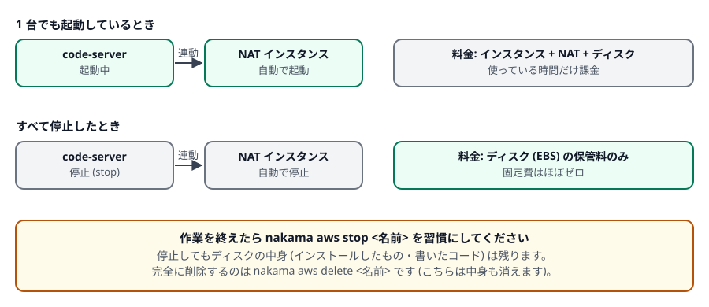

第 3 章 土台を用意する
開発環境を作る前に、その置き場所となるネットワークなどの共通部分を用意します。この作業は AWS アカウントに 1 回だけで、あとは何台作っても共有されます。
1. init で土台を作る
PowerShell で実行
nakama aws init数分かかります。進行状況が順に表示され、エラーが出ずに終われば成功です。うまく終わったかは次で確認できます。
nakama aws doctorcapability: init の行が ok で、credentials も ok なら問題ありません。途中でエラーになった場合は、そのまま nakama aws init をもう一度実行してください (できているところは飛ばされます)。
作られるものは次のとおりです (すでにあるものは作り直さずそのまま使います)。
| 作られるもの | 役割 |
|---|---|
| VPC とサブネット | AWS の中に用意する専用のネットワーク区画。開発環境は外から直接触れない「プライベート」側に置かれます |
| インターネットゲートウェイとルートテーブル | 外向きの通信経路の設定 (触る必要はありません) |
| 外向き通信の中継 (NAT ゲートウェイ、または NAT インスタンス) | 開発環境が外部と通信する (ソフトのダウンロードなど) ための中継。どちらを使うかは 次の節で選びます |
| IAM ロールとインスタンスプロファイル | 開発環境が AWS の機能 (SSM 経由の接続など) を使うための権限 (触る必要はありません) |
| WAF (Web ACL と IP セット) | 正面玄関 (CloudFront。入口を足した環境だけが持つ) の門番。許可した IP からのアクセスだけ通します |
| SSM パラメータ | 作ったリソースの ID などの控え (nakama が次回以降参照します) |
init は冪等です。すでに nakama が作ったリソースがあれば、それを再利用します。「途中で失敗した」「設定が合っているか不安」というときは、もう一度実行して構いません。
外向き通信の中継を選ぶ
開発環境は外から直接届かない場所にあるので、外向きの通信 (ソフトのダウンロードなど) は中継を通ります。中継は次の 2 つから選べます。
| 中継 | 指定 | 特徴 |
|---|---|---|
| NAT ゲートウェイ | --nat gateway (新しく始める場合の既定) | AWS が管理する中継です。nakama が更新する OS が無いので、攻撃を受ける面が小さくなります。常に動いていて、開発環境を全部止めても料金がかかります。外向きの IP アドレスは固定です |
| NAT インスタンス | --nat instance | 小さな EC2 インスタンスの中継です。開発環境が 1 台でも動いている間だけ自動で起動し、全部止めれば料金はほぼかかりません。OS は nakama が管理し、初回起動時と init の修理のときに更新します |
PowerShell で実行 (中継を指定する場合)
nakama aws init --nat gateway # NAT ゲートウェイを使う
nakama aws init --nat instance # NAT インスタンスを使う--nat を付けなければ、前回選んだ中継のままです。新しく始める場合は NAT ゲートウェイになり、その料金について注記が表示されます。この機能より前の nakama で作った土台は、NAT インスタンスのまま変わりません。
あとから切り替えることもできます。すでにある土台で中継を変えると、init は何を作って何を消すかを表示して確認を求めます (y で実行、--yes で確認を省略)。新しい中継を用意して確かめてから経路を切り替え、古い中継を消します (NAT インスタンスの権限 (IAM ロール) は、戻すときのために残します)。
経路を切り替える瞬間に、動いている開発環境の外向きの接続と、connect / ssh / tunnel の接続が切れます (connect と tunnel は自動でつなぎ直します)。確認の画面に、動いている開発環境の名前が出ます。NAT ゲートウェイから NAT インスタンスに戻すと、外向きの IP アドレスが変わります。
この機能より前の nakama で init を実行すると、NAT ゲートウェイを消して NAT インスタンスに戻します。複数のパソコンで nakama を使っている場合は、先にすべてを新しい版にしてください。戻ってしまった場合は、nakama aws doctor の egress の行に表示され、新しい版の init で元に戻せます。
NAT インスタンスを使う場合、init は最後に、NAT インスタンスが通信を中継できているかを確かめます。結果は表示の nat forwarding の行に出ます (ok なら正常、repaired なら壊れていたものを直したという意味です)。直すときは、セキュリティ更新もあわせて入れるので、数分かかります。NAT インスタンスが停止中なら点検のために起動し、終わったら停止に戻します。
直せなかった場合、init はエラーで終わります。もう一度 init を実行してください。
NAT ゲートウェイを使う場合は、使える状態 (available) になるまで待ちます。結果は nat gateway と egress ip (外向きの IP アドレス) の行に出ます。
NAT インスタンスを使う土台に、ずっと前のバージョンの nakama が作った NAT ゲートウェイが残っている場合、init はそれを削除し、割り当てられていた固定 IP (Elastic IP) を解放します。通信が途切れないように、先に新しい経路へ切り替えてから削除する順序で行われます。
初めて nakama を使う場合は、この動作は起こりません。
nakama は ap-northeast-1 (東京) を前提に作られています。他のリージョンを指定するオプションはありません (使うデータセンターの区画も自動で決まるので、気にしなくて構いません)。
2. CloudFront 経由で開くときは IP を許可する
nakama aws open と nakama aws kirocrew は、既定では SSM 経由で開くので、この節の作業は要りません (第 5 章)。開発環境に CloudFront の入口を足して (第 4 章)、--internet を付けて CloudFront 経由で開くときだけ、あなたの接続元 IP アドレスを門番 (WAF) に登録します。登録していない IP からは、正面玄関で拒否されます (403 エラー)。
PowerShell で実行 (いまの接続元 IP を自動で調べて登録します)
nakama aws acl addnakama は 2 つのサイト (checkip.amazonaws.com と ifconfig.io) に 3 回ずつ問い合わせ、見つかった IP をすべて登録します。会社のネットワークなどで外への出口が複数あり、接続のたびに出口が変わる場合でも、見えた出口はまとめて許可されます。IP が複数見つかると、added: の行が複数出ます。一部の問い合わせが失敗したときは警告が出ます (見つかった IP は登録されます)。
登録できたかは acl list で確認できます。IP を明示したい場合や、まとまった範囲を許可したい場合は引数で渡します。
nakama aws acl add 203.0.113.10 # 1 つの IP (自動で /32 が付きます)
nakama aws acl add 203.0.113.0/24 # 範囲で指定 (会社の出口が多い場合など)
nakama aws acl list # 登録済みの一覧
nakama aws acl delete 203.0.113.10/32 # 削除 (複数を並べてまとめて消すこともできます)acl list は次のように表示されます。ADDED_AT は acl add で最後に追加・確認した時刻 (登録済みの IP でも acl add のたびに書き直されます)、AGE はそれからの日数です。
CIDR ADDED_AT AGE
203.0.113.10/32 2026-09-13T00:12:04Z 0d自宅の回線は再接続で IP が変わることがあり、会社のネットワークは出口が複数あって日によって変わることもあります。acl add の 6 回の問い合わせで、すべての出口が見えるとは限りません。「昨日は開けたのに今日は 403 になる」「ときどき 403 になる」ときは、まず nakama aws acl add をもう一度実行してください。出口の範囲が分かっていれば、範囲で登録するのが確実です。
使わなくなった IP は acl delete で消しておくと安全です。
たまった IP をまとめて消す
IP を追加し続けると、もう使っていない IP が許可リストに残ります。acl delete all で一度に消せます。
nakama aws acl delete all --keep-mine # いまの自分の IP を含むものだけ残して、ほかを消す
nakama aws acl delete all # すべて消すどちらも、消す一覧を表示して確認を求めます。y と入力して Enter で実行します (--yes で確認を省けます)。
しばらく使っていない IP だけを消すには acl prune を使います。acl add で最後に追加・確認してから指定の期間 (30d は 30 日) が過ぎたエントリを消します。いまの自分の IP を含むエントリは古くても残り、nakama の外で足したエントリ (時刻の記録が無いもの) は消さずに警告します。こちらも消す一覧と残す一覧を表示して確認を求めます。
nakama aws acl prune --older-than 30d # 30 日を超えて acl add していないものを消すacl add だけです
nakama aws open --internet で開いたり、ブラウザで使ったりしても、時刻は更新されません。毎日使っている IP でも、しばらく acl add していなければ古く見えます。その場所から使い続けるなら、acl prune の前に nakama aws acl add を実行してください。
acl delete all は自分も締め出します
すべて消すと、CloudFront 経由 (--internet) では、どの開発環境 (Kiro Crew の画面も含む) も、あなたを含むすべてのブラウザに 403 を返します。CloudFront 経由で使い続けるなら --keep-mine を付けるか、消した後に nakama aws acl add で登録し直してください。SSM 経由の open / kirocrew と connect / ssh / tunnel は許可リストを使わないので、影響を受けません。
open / kirocrew (既定) と connect / ssh / tunnel は SSM 経由なので、IP の許可は不要です (AWS の権限で守られます)。IP 許可が必要なのは、CloudFront の入口を足した環境に --internet を付けて開く場合だけです。開発環境は、作った時点ではインターネットからの入口を持ちません (第 4 章)。第 5 章で詳しく扱います。
0.0.0.0/0 のような「どこからでも」に相当する範囲を登録すると、門番の意味がなくなります。開発環境にはパスワードもかかっていますが、許可 IP は必要最小限にしてください。
3. 料金の考え方
nakama が作るリソースには AWS の料金がかかります。金額はリージョンや使い方で変わるため、実際の見積もりは AWS 料金計算ツール や AWS コンソールの請求画面で確認してください。 ここでは「どこにお金がかかるか」の構造だけを説明します。
| 対象 | いつ課金されるか |
|---|---|
| 開発環境の EC2 インスタンス | 起動している時間だけ。停止すればかかりません |
| ディスク (EBS) | 作ってある間ずっと。停止中も保管料がかかります (中身を保つため) |
NAT ゲートウェイ (--nat gateway) | 作ってある間ずっと。開発環境を全部止めてもかかります。時間割りの料金 + 中継した通信量 (connect / tunnel の通信も含む) + 固定 IP (Elastic IP) の料金 (Amazon VPC の料金) |
NAT インスタンス (--nat instance) | 開発環境が 1 台でも起動している時間だけ (自動で連動します)。ただし init の直後は起動した状態で作られ、次に stop / delete などで電源が見直されるまで動き続けます |
| CloudFront | 入口を足した環境だけ。通信量とリクエスト数に応じて |
| WAF | Web ACL が存在する間、時間割りの基本料金 + リクエスト数 (AWS WAF の料金)。CloudFront の入口を持つ環境が無くても、Web ACL は土台に残るので基本料金はかかります |
| バックアップ (スナップショット) | 保管している容量に応じて。世代を増やすほど増えます |

- 作業が終わったら
nakama aws stop <名前>で止める (中身は残ります) - 使わない環境は
nakama aws delete <名前>で削除する (中身も消えるので、必要なものは先にバックアップか git へ) - バックアップの世代を
--keepで制限する (第 6 章) - 大きなインスタンスは必要なときだけにして、ふだんは小さいものに戻す (
nakama aws edit --instance-type)
すべて停止しても、次のものは残ります。
- 各環境のディスク保管料
- WAF の Web ACL の基本料金 (時間割り)
- NAT インスタンスを使う場合: NAT インスタンスの小さなディスクの保管料
- NAT ゲートウェイを使う場合: NAT ゲートウェイの時間割りの料金と、固定 IP (Elastic IP) の料金 (ほかの 3 つより大きな額です。止めている時間が長いなら、
nakama aws init --nat instanceで NAT インスタンスに切り替えられます)
土台まで含めて消すコマンドはありません。完全に止めるには、各環境を nakama aws delete で削除したうえで、AWS コンソールから名前が nakama- で始まるリソース (WAF の Web ACL と IP セット、NAT ゲートウェイと Elastic IP、または NAT インスタンス、VPC、IAM ロール、SSM パラメータ) を削除します。判断に迷う場合は AWS の管理者に依頼してください。